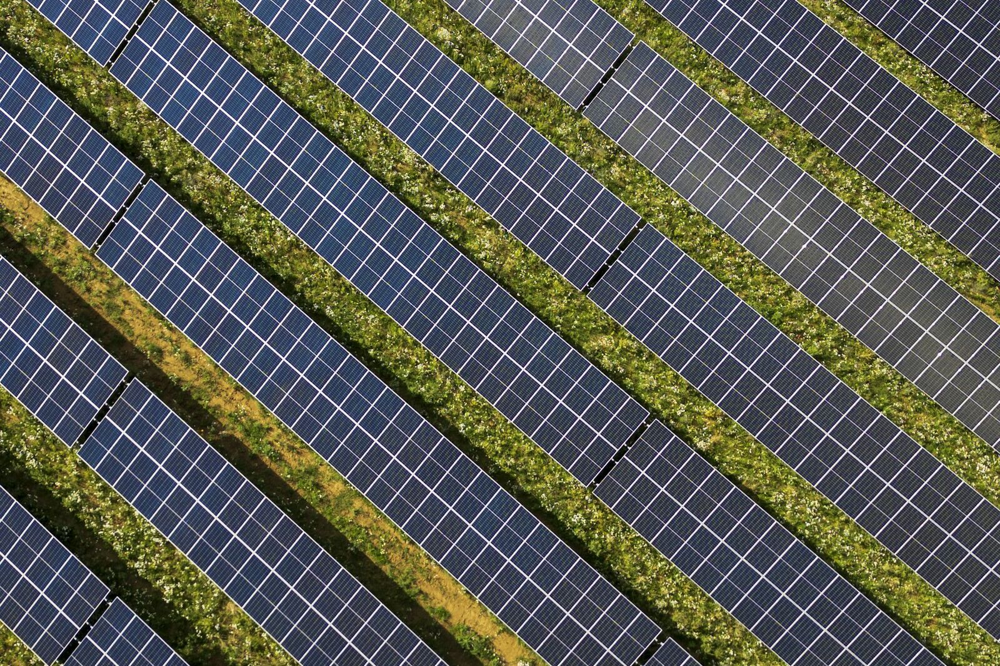

Proof, not promises: what maintained actually means
Solar farm vegetation compliance records: height, zone and date with photos, every cycle. Mapped-line mowing logs what was cut and when. Show the file.

What vegetation compliance records should a solar farm keep?
Height, zone and date, with photos, every cycle, against the contract numbers. A machine following mapped lines logs what it cut and when, and adding height checks and photos each cycle turns that into a file an auditor can read.
Every vegetation contractor says the site is under control. The question that matters is different: can you show it?
On utility solar, the contract is specific. Heights held to numbers, commonly around 100mm under the panels and 300mm between the rows, every cycle. When something goes wrong, a fire, an audit, an insurance question, the conversation is not about effort. It is about records. What was the height, in that zone, on that date, and where is the evidence.
Most sites cannot answer. Not because the work was not done, but because nobody wrote it down. Mowing done by whoever had a spare hour leaves exactly the paper trail you would expect: none.
This is where autonomous mowing quietly changes the game, and it has little to do with the blades. A machine that follows mapped lines knows what it cut and when. Add height checks and photos each cycle and you get something no ad hoc crew produces: a running, dated record of the whole site against its contract numbers. Coverage logs. Cut history by zone. Photographic evidence at the heights that matter.
For a site manager, that record is the difference between we think we are compliant and here is the file. For an asset owner, it is the difference between trusting a contractor's word and reading a report.
The mowing is the visible product. The record is the durable one. When the auditor, the insurer or the fire investigator asks their question, only one of those two is worth anything.
Common questions
What heights does a solar contract usually specify?
Commonly around 100mm under the panels and 300mm between the rows, held every cycle. The exact numbers sit in your contract, and the record should be measured against them.
Is the record produced automatically?
Partly. The machine logs coverage and cut history by zone as it runs. Height checks and photos are done by a person each cycle, and the file is assembled by hand, not pulled from a live screen somewhere.
Does the record cover the whole site?
It covers the mapped runs the machine cuts, roughly 60 to 70 percent of the task. Close-in work around posts, edges and structures is done by people and gets logged the same way, by hand.
Who asks for these records?
Auditors, insurers and fire investigators, usually after something has gone wrong. The conversation is about evidence, not effort.
Read next
Related: Why autonomous mowing trials fail, Solar Farm Vegetation Management with Autonomous Mowers and The mower does not need the internet. Here is what does..
AutoAcre is an autonomous mowing operator based in the Northern Rivers, NSW, focused on solar-farm and commercial vegetation management. ben@autoacre.com.au